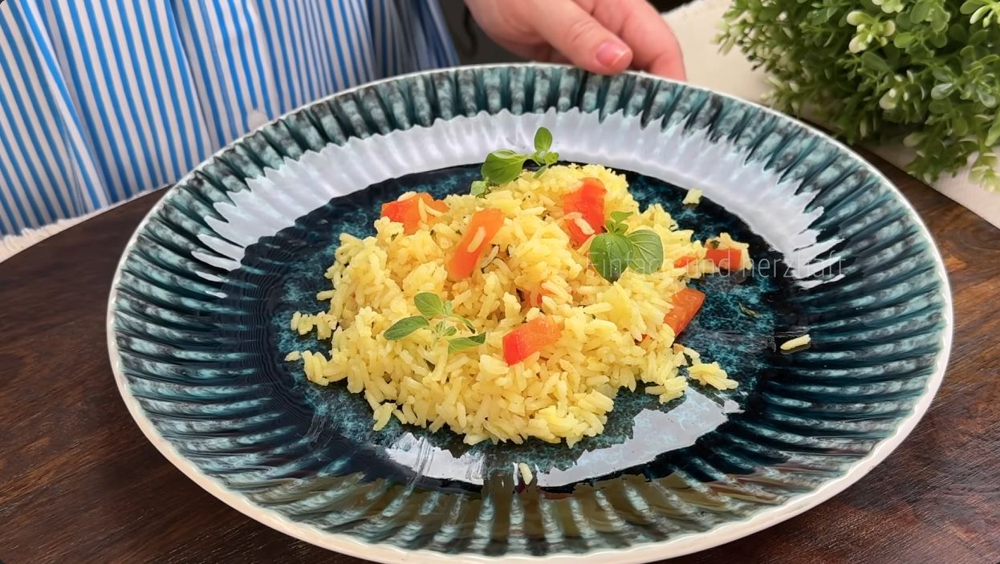

RECIPES:
Bacon Egg & Cheese Sandwich:
Ingredients:
- 2 slices of white bread
- Butter
- 2 Eggs
- Salt
- Pepper
- 2 Slices Of Bacon
- Mozerella Cheese
- Cheddar Cheese
Procedure:
- Add 2 Eggs Into A Small Bowl, Add Salt & Pepper & Mix Until Fully Blended
- Smear Butter Over One Side Of Sliced Bread
- Prep Non Stick Pan
- Set Heat To Medium
- Place Bacon Onto Pan
- Cook Until Crispy (Roughly 10 Minutes)
- Remove Bacon & Spread Butter & Then Add Eggs
- Place Bread In Pan Butter Side Up
- Flip Egg Onto Bread
- Add Your Bacon Slices, Cheddar & Mozerella
- Cook Until Well Done (5-10 Minutes)
- Place On Plate & Enjoy
Yellow Rice:
Ingredients:
- 2 Cups Of Rice
- 1 Liter/4 Cups Of Chicken Broth
- 1 Onion
- 2 Cloves Of Garlic
- 1 Medium Tomato
- Parsley Or Cilantro
- 1 Teaspoon Of Salt
- 1/2 Teaspoon Of Curry Powder
Procedure:
- Chop Onions Into Thin Slices
- Throw Chopped Onions Into Pan, Stir & Let Cook For A Couple Of Minutes
- While Onion Cooks, Chop Up A Small Bunch Of Parsley (You Can Use Cilantro Also Or Both If Preffered)
- Add Parsley To Onions, Mix, Let It Cook For A Couple Of Minutes
- Meanwhile, Mince 2 Cloves Of Garlice
- Add Minced Garlic To Pan, Cook For 30 Seconds, Stirring Constantly
- Next Add 2 Cups of Dried Rice (If Preffered Fluffy Rice, Rinse Before Cooking)
- Chop Up Medium Tomato Into Cubes
- Add Tomatoes & Stir
- Add 1 Liter (4 Cups) Of Chicken Broth
- Let Broth Boil On Hot Heat
- Add 1 Teaspoon Of Salt
- Add 1/2 Teapsoon Of Curry Powder Then Mix
- As Water Boils Down & Barely Skims Top Of Rice, Reduce Heat To Very Low & Cover for 15 Minutes
- After 15 Minutes Are Up, Fluff The Rice Around With Spoon Or Spatula
- Place On Plate & Enjoy

Honey Garlic Chicken Dinner:
Ingredients:
- 3/4 Pound (340g) Of Chicekn Breast, Boneless & Skinless
- Salt & Pepper
- 2 Tablespoons Of Flour (18g)
- 1 Tablespoon Olive Oil (13g)
- 2 Tablespoons Of Unsalted Butter (28g)
- 2 Cloves Of Garlic (12g)
- 1 Tablespoon Of Light Soy Sauce (16g)
- 1 Tablespoon Of White Vinegar (14g)
- 2 & 1/2 Tablespoon Of Honey (53g)
Procedure:
- Cut 3/4 Pound Chicken Breast / Boneless / Skinless Into Cubes
- Add Salt & Crushed Black Pepper Then Mix
- Add 2 Tablespoons Of Flour
- Mix Until Chicken Is Fully Coated
- Mince 2 Gloves Of Garlic
- Add 1 Tablespoon Of Light Soy Sauce Into Seperate Cup
- Add 1 Tablesppon Of Light Vinegar
- Add 2 & 1/2 Tablespoon Of Honey & Mix
- Add 1 Tablespoon Of Olive Oil Into Pan
- Throw 1 Tablespoon Of Butter
- Add Your Chicken To The Pan
- Cook Until All Sides Are Golden (Takes Roughly 5-7 Minutes)
- Cook Them One Side At A Time, Do Not Frequently Turn Them
- Move Chicken To Edges
- Add 1 Tablespoon Of Butter % Minced Garlic You Chopped From Before Into Pan And Saute For 30 Seconds Until Fragrant
- Add Honey Sauce Prepared From Earlier
- Turn Heat To Medium-Low & Coat Chicken With Sauce
- Place On Plate & Enjoy
{kind=link}
{kind=link}
{kind=link}